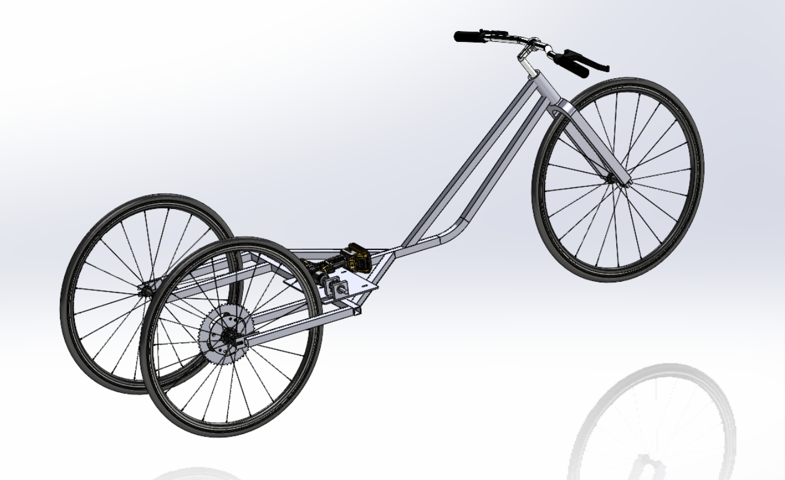
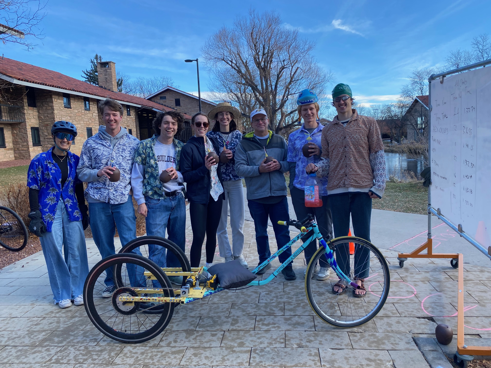

Drill Powered Bike
By Cole Rutkowski

Introduction:
In the final project of the Component Design course at CU Boulder, mechanical engineering students are tasked with designing and manufacturing a drill-powered bike. Building on concepts from Statics and Solids, the class focuses on analyzing and calculating stress concentrations, design factors, factors of safety, fatigue, and failure modes. Students also learn to on design and select bearings, fasteners, screws, shafts, DC motors,and gear ratios to meet calculated load requirements.
Design Requirements
Competition Rules:
We competeted in the endurance race, which consisted of an 1100 foot circuit around Kitt Pond, involving two left turns, four right turns, and 24 feet of elevation gain. The duration of this race was 30 minutes, and the goal was to complete the most laps in the allotted time. Our bike had to meet the following requirements: maximum weight of 50 lbs, a budget of 200 dollars, 20V cordless Dewalt drill, cannot have only 2 wheels (1, 3, 4 etc is fine), reuse 1 section of existing bike (front fork or back triangle).
My contributions:
My specific contributions were extensive. Pictures and descriptions of each component can be found in the report below. I designed the overall frame with weldments in SolidWorks, designed the cassette adapter, and completed the final SolidWorks assembly. Additionally, I reviewed and edited all drawings before submission for manufacturing. I manufactured the dropouts and welded the frame with the help of a teammate. I also painted the base coat and about half of the designs. I also did the entire assembly and completed thorough testing before our competition.
Results:
We ultimately won the endurance competition and set a new lap record! We also had an amazing paintjob to match our beach theme!

More details can be found in our report below.